|
These slideshows are from travels in the Rocky Mountains (New
Mexico, Colorado, Wyoming, Idaho, Montana and Alberta).
To view a slideshow, click on its thumbnail (photograph).
|
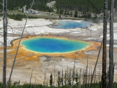
Yellowstone National Park
|
2009 Summer Vacation
 TX→WY→TX TX→WY→TX
July 10-August 1
282 photos (78MB)
Highlights: Yellowstone, Grand Teton
Camera: Canon SX10 IS (F)
|
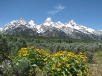
Grand Teton National Park
|
2011 Summer Vacation
TX→ID→TX
June 24-July 19
329 photos (96MB)
Highlights: Grand Teton, Yellowstone, Snake River, Craters of the Moon, Minnetonka Cave, Fossil Butte, Flaming Gorge, Capulin Volcano
Cameras: Canon SX10 IS (G), Panasonic DMC-FZ5 (H)
|
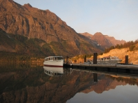
Glacier National Park
|
2014 Summer Vacation
TX→MT→WI→TX
June 28-July 29
408 photos (115MB)
Highlights: Air Force Academy, Glacier, Yellowstone, Beartooth Highway, Chief Joseph Highway, Theodore Roosevelt, St. Louis
Cameras: Canon SX40 HS (I), Canon SX10 IS (J), Panasonic DMC-FZ5 (L)
|
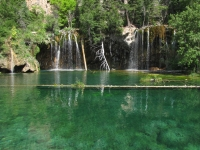
Hanging Lake
|
2015 Summer Vacation
TX→CO→TX
June 28-July 9
167 photos (49MB)
Highlights: Mesa Verde, Durango & Silverton Narrow Gauge Railroad, Million Dollar Highway, Black Canyon of the Gunnison, Hanging Lake, King's Row Cave, Denver
Cameras: Canon SX40 HS (I), Canon SX10 IS (J), Panasonic DMC-FZ5 (L)
|
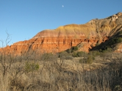
Palo Duro Canyon State Park
|
2015 Winter Break
TX→NM→TX
December 18-22
56 photos (15MB)
Highlights: Albuquerque, Palo Duro Canyon
Cameras: Canon SX40 HS (I), Canon SX10 IS (J), Panasonic DMC-FZ5 (L)
|
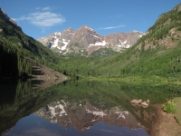
Maroon Bells-Snowmass Wilderness
|
2017 Summer Vacation
TX→CO→TX
July 12-24
126 photos (36MB)
Highlights: Paint Mines, Rocky Mountain, Maroon Bells, Hanging Lake
Cameras: Panasonic DMC-FZ5 (H), Canon SX10 IS (M), Canon SX60 HS (N)
|
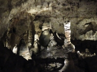
Rocky Mountain National Park
|
2018 Spring Break
TX→CO→TX
March 11-18
109 photos (27MB)
Highlights: Carlsbad Caverns, Rocky Mountain
Cameras: Panasonic DMC-FZ5 (H), Canon SX60 HS (N)
|
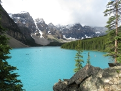
Banff National Park
|
2019 Summer Vacation
TX→AB→TX
June 28-July 28
654 photos (183MB)
Highlights: Mt. Evans, Hell's Half Acre, Beartooth Highway, Yellowstone, Great Falls, Waterton Lakes, Banff, Jasper, Yoho, Glacier
Cameras: Canon SX10 IS (M), Canon SX60 HS (N), Canon SX720 HS (O)
|
 Compilations
Compilations
|
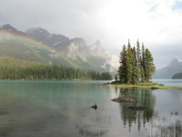
Jasper National Park
|
Dave's Faves
2005-2019
302 photos
|
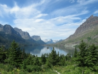
Glacier National Park
|
Glacier National Park
July 2-12, 2014
July 6 & 19-24, 2019
327 photos
|
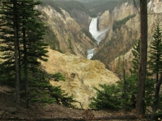
Yellowstone National Park
|
Yellowstone National Park
July 20-28, 2005
July 13-27, 2009
June 27-July 7, 2011
July 12-20, 2014
July 3 & 24-26, 2019
653 photos
|
|
NOTES
|
- Pictures are original digital material, no editing has taken place except for resizing and cropping
- Pictures are displayed in chronological order
- Pictures are displayed at the rate of 20 per minute
|
|
|